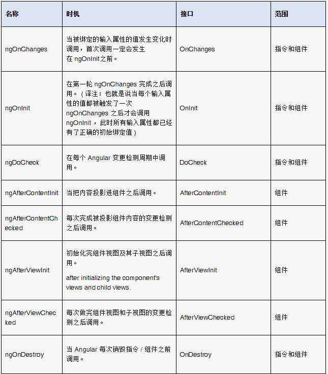

1. Angular2不是从Angular1升级过来的，Angular2是重写的，所以他们之间的差别比较大，不是你用过1就能直接上手2的，计划可以认为是一个新的框架；
2.Angular2使用了javascript的超集‘Typescript’，所以angular1和angular2从设定之初就是不一样的；
3.Angular1.x在设计之初主要是针对pc端的，对移动端支持较少（当然也有其他一些衍生框架如ionic），而Angular2是设计包含移动端的；
4.Angular 1的核心概念是$scope，但是angular2中没有$scope，angular2使用zone.js来记录监测变化；
5.Angular 1 中的控制器在angular2中不再使用，也可以说控制器在angular2中被‘Component’组件所替代：
angluar2 cli 是一个比较好的工具 。解决 Angular 2 环境设置是一大入门门槛，有22%的人说环境设置太过复杂。Angular CLI的诞生，正是为了解决这个问题。
需要安装NodeJS 5.0以上版本,NPM 3.0以上版本
windows： npm install -g angular-cli
macOS: sudo npm install -g angular-cli
脚手架：https://github.com/vladotesanovic/ui-grid-angular2
ng serve
如果我们需要开多个端口： ng serve --port 4201
创建项目命令 ng new hello-angular
创建组件命令 ng g c index
创建server文件命令 ng g s index/index

模块由一块代码组成，可用于执行一个简单的任务。
Angular 应用是由模块化的，它有自己的模块系统：NgModules。
每个 Angular 应该至少要有一个模块(根模块)，一般可以命名为：AppModule。
Angular 模块是一个带有 @NgModule 装饰器的类，它接收一个用来描述模块属性的元数据对象。
几个重要的属性如下：
declarations （声明） - 视图类属于这个模块。 Angular 有三种类型的视图类： 组件 、 指令 和 管道 。
exports - 声明（ declaration ）的子集，可用于其它模块中的组件模板 。
imports - 本模块组件模板中需要由其它导出类的模块。
providers - 服务的创建者。本模块把它们加入全局的服务表中，让它们在应用中的任何部分都可被访问到。
bootstrap -通常是app启动的根组件，一般只有一个component。bootstrap中的组件会自动被放入到entryComponents中。
entryCompoenents-不会再模板中被引用到的组件。这个属性一般情况下只有ng自己使用，一般是bootstrap组件或者路由组件，ng会自动把bootstrap、路由组件放入其中。除非不通过路由动态将component加入到dom中，否则不会用到这个属性。
selector就是其使用时的标签名
templateUrl即组件关联的界面的模板
styleUrls即仅在此组件内生效的样式表
animations定义的是一套ng2动画规则
在Angular2中有三种类型的指令（Directive）
1. 组件 — 拥有模板的指令。
2. 结构型指令 － 通过添加和移除DOM元素来改变DOM结构的指令。例如：NgFor, NgIf …
3. 属性型指令 - 改变元素显示和行为的指令。例如：NgStyle …
结构指令是对DOM的添加或移除，这会改变DOM的布局。在模板语法章节就介绍过ngIf、ngSwitch 和 ngFor。
属性指令改变的是元素的外观或行为，例如内置 NgStyle 指令，可以根据绑定组件的属性值同时改变多个元素的样式